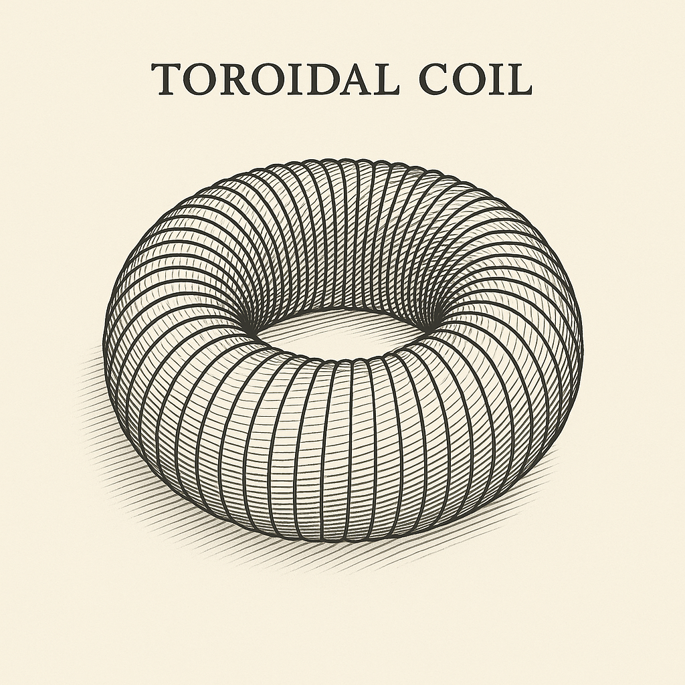
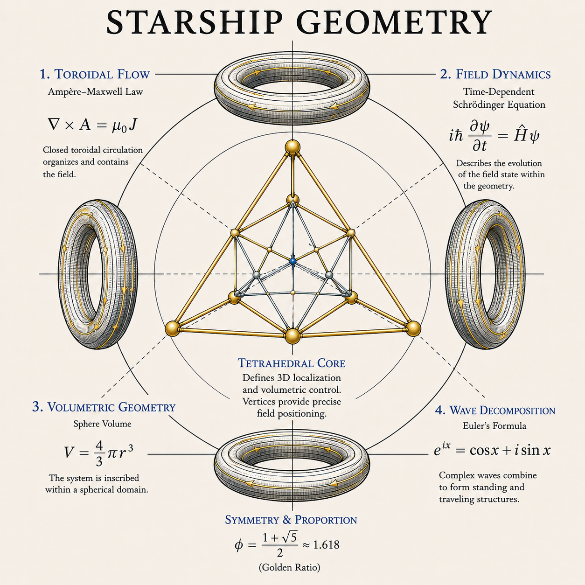

Original Framework Disclosure — Full Open Publication
Starship Geometry is released as a complete open framework disclosure. All architecture, mathematics, evidentiary framework, experimental protocols, and limitation statements are fully disclosed. Internal Christos™ application specifications (SEV-1 spacecraft architecture, PST, CQI) are referenced by name only as examples of architectural recurrence — their complete specifications are in their own dedicated papers. This paper has no NDA gate. It is designed to be tested by anyone.
Starship Geometry is proposed as a general engineering discipline for organizing circulating fields, resonant matter, plasma, crystalline structures, information state, and interacting oscillatory systems into stable, recursively scalable architectures. The term originated during the development of unconventional spacecraft field geometries, but the underlying organizational pattern subsequently reappeared across plasma processing, energy conversion, material synthesis, field stabilization, transportation, distributed information networks, biological coherence models, and resonant medicine.
The mature architecture rests on six recurring elements: a double toroidal circulation structure; counter-rotating or counter-phased field layers; phi-related proportional geometry; crystalline or otherwise frequency-stable nodal elements; a tetrahedral volumetric control lattice — the Attached Hedron — that gives the architecture three-dimensional coordinates; and a central coherent operating region, the Coherence Reservoir, that emerges from the interaction of the other five.
The central working distinction of this paper is functional: the toroidal component governs how a field circulates, while the Attached Hedron governs where that field acts. Circulation without localization is topologically interesting but operationally crude. Localization without circulation lacks a field to place. Together they constitute a controllable domain — the proposed technological contribution of this framework.
This paper separates experimentally established physical mechanisms from Starship Geometry's own engineering hypotheses and frontier predictions, develops the architecture's mathematical and geometric foundations, defines a common set of performance metrics and evidence grades, and proposes a staged, falsifiable validation program — beginning with bench-scale component testing rather than any large integrated system — capable of determining which claimed properties survive physical measurement.
1. Origin and Scope
The name Starship Geometry is historically descriptive rather than functionally restrictive. The architecture was first conceived while asking how a craft could generate and maintain a self-contained field environment rather than behaving as a conventional vehicle propelled through an external medium. That question produced several recurring requirements: a craft would need circulation rather than one-directional exhaust; its internal and external field structures would need to remain dynamically coupled without collapsing into one another; and rotational momentum, field pressure, electromagnetic gradients, plasma behavior, structural vibration, and resonant boundary conditions would have to be managed simultaneously.
A useful geometry therefore could not simply be a coil. It had to be a field architecture. The original toroidal coil evolved into nested toroidal structures, counter-phased layers, spiral winding geometries, crystal stabilization points, and a protected central operating region — and, later, a tetrahedral structure at the center that gives the architecture three-dimensional coordinates rather than only circulation.

Once this pattern began appearing independently in systems having nothing to do with spacecraft — plasma processing, crystal growth, resonant medicine, distributed information networks, environmental engineering — a deeper principle became apparent: Starship Geometry does not describe the shape of a vehicle. It describes a method for organizing interacting fields into a coherent, circulating, and precisely addressable system. A spacecraft may use Starship Geometry. So may a plasma reactor, a crystal growth chamber, a resonant medical device, or a planetary sensing network. The object changes. The organizing topology does not.
1.1 What This Paper Does and Does Not Claim
This paper formalizes Starship Geometry as an independent engineering framework. It does not ask the reader to accept every application built from it, and it does not treat the appearance of the same geometry across several unrelated technologies as evidence that any one of them works. Each application requires its own evidence, developed in its own dedicated paper. This document exists so that those later papers can share one precise vocabulary, one mathematical formalism, one evidence-grading system, and one experimental standard.
Several full technical specifications already exist for applications of this architecture — including a Planetary Stewardship Transducer (PST) environmental research platform, a Christos Quantum Internet (CQI) coherence-based network architecture, a Resonant Dentistry framework, and a spacecraft field architecture — and are referenced here only to demonstrate that the same organizing pattern recurs across independently developed systems. Their full claims, evidence, and validation requirements are outside the scope of this paper and will be addressed in their own dedicated publications.
2. How to Read This Paper: The Evidentiary Framework
Because Starship Geometry spans everything from well-established electromagnetics to frontier propulsion speculation, every claim in this paper is labeled at one of three levels, graded on one evidence scale, and — where a specific result is asserted — restricted to language appropriate to that evidence grade.
2.1 Three Levels of Claim
| Level | Definition | Representative Content |
|---|---|---|
| I — Established Physical Mechanisms | Supported by existing, independent scientific literature. | Toroidal electromagnetic confinement; inductance and mutual inductance; counter-rotating mechanical systems; piezoelectric crystal behavior; resonant cavities and standing waves; phased-array beam steering and near-field focusing; coupled-oscillator synchronization; feedback control; signal coherence analysis. |
| II — Starship Geometry Engineering Hypotheses | Novel to this framework, but stated in directly falsifiable, bench-testable form. | Phi-spaced components improve broadband stability; counter-rotating nested toroids improve perturbation rejection; distributed crystalline nodes reduce resonant drift; a tetrahedral (Attached Hedron) control lattice outperforms alternative emitter geometries for volumetric localization; a central low-variance Coherence Reservoir emerges under specified conditions. |
| III — Frontier Predictions | Unvalidated; presented as long-range research questions, not consequences of the architecture. | Vacuum-energy extraction; macroscopic inertia modification; metric engineering / warp displacement; teleportation; cross-dimensional phase transfer; any claim of biological or material transformation from field geometry alone. |
The Discipline
Level III predictions are legitimate long-range research questions. They are not presented as established consequences of Level I or Level II content, and no claim in this paper promotes Level III language merely because a Level I or Level II result was obtained nearby in the architecture.
2.2 Evidence Grades
Every specific technical claim in this paper — and in any later Starship Geometry paper — carries an evidence grade:
| Grade | Meaning |
|---|---|
| SG-0 — Conceptual | Derived from geometry, analogy, or theoretical reasoning; no experiment performed. |
| SG-1 — Simulated | Demonstrated in numerical modeling only. |
| SG-2 — Bench Observed | Measured once in controlled laboratory hardware. |
| SG-3 — Repeated Bench Result | Statistically repeated within one laboratory. |
| SG-4 — Multi-Build Reproduction | Observed across independently built prototypes. |
| SG-5 — Independently Replicated | Reproduced by an unaffiliated laboratory. |
| SG-6 — Application Demonstration | Works under realistic application conditions. |
| SG-7 — Operational Validation | Reliable enough for sustained real-world use. |
Current Status
Unless stated otherwise, every specific engineering hypothesis and frontier prediction in this paper is currently at SG-0. That is expected and appropriate for a founding architecture paper. The point of the grading system is to make that status visible and to give every later experiment a place to report progress against it.
2.3 The Claim Ladder
| Level | Permitted Description |
|---|---|
| 0 | Conceptual hypothesis. |
| 1 | A treatment- or geometry-associated difference was observed relative to sham/control. |
| 2 | The difference has been replicated by the same team (SG-3). |
| 3 | Conventional explanations have been tested and found insufficient to account for the difference. |
| 4 | A physical or mathematical mechanism has been partially characterized. |
| 5 | The result has been independently replicated (SG-5). |
| 6 | The result has been demonstrated at practically useful scale, power, or throughput (SG-6/SG-7). |
No result in this program is described in Level-6 language — "programmable matter," "warp field," "proven" — on the strength of a Level 0–2 observation.
3. The Core Architecture
The mature Starship Geometry architecture consists of six recurring elements. The first four were present in the earliest spacecraft-field concept; the fifth — the Attached Hedron — was recognized later as the missing piece that converts a circulating field into a positionable one; the sixth, the Coherence Reservoir, is not a separate component but the measured state that emerges from the interaction of the first five.

3.1 Double Toroid — Boundary and Flow
The foundational structure is not a single torus but two dynamically related toroidal domains — an inner circulation regime and an outer circulation regime:
The two toroids need not be identical in dimension, resonant frequency, field intensity, phase velocity, working medium, or direction of circulation. Their defining characteristic is coupled circulation: rather than allowing an imposed field to propagate outward indefinitely, the geometry redirects a usable portion of it into additional circulation. The outer region acts as the interface with incoming environmental or energetic disturbance; the inner region functions as a progressively organized field domain. The architecture is fundamentally recursive.
Hypothesis: coupling an inner and outer toroidal domain measurably improves field stability, disturbance rejection, or usable circulation compared with a single-toroid control of matched power and material. This is bench-testable (Section 10, Core C).
3.2 Counter-Rotating / Counter-Phased Field Layers
If every field layer rotates identically, the system accumulates angular momentum in one direction. Starship Geometry instead introduces oppositely phased or counter-rotating layers. For two rotational domains with angular momenta L1 and L2, a balanced design approaches L1 ≈ −L2, so that the net angular momentum L_net → 0. This is conventional mechanics; it does not by itself imply gravitational or inertial effects.
The more experimentally interesting region is the boundary between the two layers. For angular velocities Ω1 and Ω2 in counter-rotation (Ω1 > 0, Ω2 < 0), the differential rotation ΔΩ = Ω1 − Ω2 can exceed the magnitude of either individual rate, producing a high-gradient interaction boundary.
Hypothesis: this counter-rotation boundary functions as a coherence-processing interface with measurably different perturbation-recovery behavior than a single-direction control (Section 10, Core C).
3.3 Phi Spiral Proportional Geometry
The golden ratio Φ = (1+√5)/2 ≈ 1.6180339887 generates a family of nested dimensions r_n = r₀Φn, and a logarithmic spiral r(θ) = aebθ with b = ln(Φ)/2π increases by a factor of Φ per revolution. The significance proposed for Starship Geometry is not aesthetic; it is the creation of a single recursive spacing law that could organize coil turns, crystal positions, cavity radii, plasma shells, sensor locations, resonant frequencies, and nested device scales under one proportional rule.
The Honest Position
Whether phi spacing provides a measurable performance advantage over an optimized non-phi spacing is an open, currently unaddressed experimental question (Section 10, Core F). This paper takes no position on whether it will. A serious validation program compares phi geometries against numerically optimized and simple-ratio controls rather than assuming superiority.
3.4 Crystalline Resonant Nodes
Quartz is piezoelectric: mechanical deformation produces electric polarization, and applied electric fields generate mechanical strain. A crystal positioned at a field intersection is not decorative — it can function as an actual transduction element. Quartz crystal resonators are an established, precisely characterized technology in frequency control and timing, with well-documented relationships among crystal cut, size, mounting, temperature, and resonant Q factor.
Within Starship Geometry, crystalline nodes are proposed to perform four functions: frequency reference, phase stabilization, energy conversion, and local field sensing. The hypothesis — that resonant crystalline nodes provide a measurable reference signal by which the system can detect and correct field drift — is substantially more defensible and more directly testable (Section 10, Core E) than any claim that crystals inherently produce exotic field effects.
3.5 The Attached Hedron — Volumetric Control
The torus is extraordinarily useful for circulation, but circulation alone does not specify precisely where inside the enclosed volume a controlled interaction should occur. That requires a second geometry: a tetrahedral control lattice — the Attached Hedron — functionally attached to the toroidal system.
3.5.1 Why a Tetrahedron
A tetrahedron is the simplest polyhedron capable of enclosing a three-dimensional volume: four vertices V1–V4, not coplanar, give the 3D equivalent of a triangle — the simplest 3D simplex. Any point r inside the tetrahedron can be expressed in barycentric coordinates:
A ring provides excellent circumferential (angular) control; a tetrahedron provides volumetric addressing. These are complementary problems: the torus creates the domain, and the Attached Hedron gives that domain coordinates.
3.5.2 Level I Foundation: Phased-Array Focusing
Phased-array systems — in radar, ultrasound, acoustics, and RF engineering — already demonstrate that spatially separated sources with independently controlled amplitude and phase can steer and focus a field electronically, placing a near-field focus at a specific three-dimensional coordinate without moving any physical element. Beamforming as a spatial-filtering and focusing technique is a mature, well-documented engineering discipline.
Starship Geometry extends established phased-array and beamforming principles into a tetrahedral volumetric control architecture embedded within a toroidal field system. The proposed advantage of a tetrahedral emitter arrangement over planar, cubic, octahedral, or other geometries for this specific application remains an experimentally testable prediction, not an established result.
3.5.3 Field Coordinates
For vertex i, define a control state ui = {Ai, fi, φi, pi} (amplitude, frequency, phase, position/orientation). The resulting field Ψ(r,t) = ∑Ψi(r,t; ui), and the controller searches for the control vector U* that minimizes |Ψ(rt) − Ψtarget| at a target coordinate rt.
3.5.4 Star Tetrahedron and Nested Hedrons
Two interpenetrating tetrahedra (a star tetrahedron) provide two complementary control bases, TA and TB, giving eight directional vertices before internal intersections are considered — additional redundancy, fault detection, and control resolution. The same lattice can be nested H0 ⊃ H1 ⊃ H2, with each smaller tetrahedron providing finer positional resolution — a coarse-to-fine addressing scheme analogous to coarse/fine positioning stages used throughout precision engineering.
Hypothesis: a tetrahedral (and, where redundancy matters, star-tetrahedral) control lattice produces superior localization accuracy, lower cross-talk, and better fault tolerance than a matched planar, cubic, or octahedral emitter arrangement of equal actuator count and power (Section 10, Core D).
3.6 The Coherence Reservoir
At the intersection of the double toroid, counter-rotation, spiral geometry, and the Attached Hedron lies the sixth element: the Coherence Reservoir — the central working region of the architecture. It is defined operationally as the region in which fluctuations in a selected measurable variable are minimized relative to the surrounding field.
For magnetic amplitude: CB = 1 − σB/μB. For phase stability: Cφ = |(1/N)∑ eiφj| — the same order-parameter form used to quantify synchronization in coupled-oscillator systems. For two signals, magnitude-squared coherence: Cxy(f) = |Sxy(f)|² / [Sxx(f)Syy(f)]. These are all conventional, independently measurable quantities.
3.7 Flow and Place
| Element | Role |
|---|---|
| Torus | Circulation architecture — FLOW |
| Attached Hedron | Precision architecture — PLACE |
| Coherence Reservoir | The measured state their interaction produces |
Circulation without localization is crude. Localization without a circulating field to place lacks a medium. Together, flow and place constitute control — and control is what makes the geometry technologically useful, independent of any claim about what that control might eventually enable.
4. Mathematical Formalism
4.1 System State and the Starship Geometry Operator
A Starship Geometry system is represented as the coupled interaction of five principal domains:
Where T is the toroidal circulation architecture, H is the Attached Hedron control architecture, N is the distributed node system, S is the sensing and state-estimation layer, and C is the control and feedback layer. The complete measured physical state X(t) = [XT, XH, XN, XS]T — a coupled state system, not one oscillator.
Generalized dynamics: ẋ = F(X, U, D, P), where U is the control input, D is external disturbance, and P is the physical parameter set — critically including geometry itself: P = [G, M, R, Q, K, ...] with G = geometry, M = material properties, R = resonant properties, Q = quality factors, K = coupling coefficients. Promoting geometry into the parameter set is what allows it to be varied experimentally like voltage or frequency.
Define the transformation operator S such that Xout = S[Xin; G,Φ,Ω,Q,K,B]. For an effective system, the hypothesis is C(Xout) > C(Xin), giving the Coherence Gain:
GC > 1 indicates increased coherence; GC = 1, no net change; GC < 1, degradation. A Starship Geometry device does not need to demonstrate anything beyond a reproducible coherence gain relative to appropriate controls to register its first positive result.
4.2 Coherence Is Domain-Specific, Not One Number
Different systems have different coherence domains: Cφ (phase), Cr (spatial), Cf (frequency), CB (magnetic-field stability), CT (thermal uniformity), Cn (network synchronization). A generalized coherence state vector is C = [Cφ, Cr, Cf, CB, CT, Cn]. Phase coherence uses the Kuramoto order parameter: r·eiψ = (1/N)∑ eiθj. r → 1 indicates synchronization; r → 0, incoherence.
4.3 Universal Performance Metrics
| Metric | Definition | Interpretation |
|---|---|---|
| Coherence Gain (GC) | C(Xout) / C(Xin) | Did the architecture increase organization of the transported/processed quantity? |
| Localization Gain (GL) | LC,SG / LC,control | Did the Attached Hedron concentrate the field in the target volume better than the control geometry? |
| Recovery Gain (GR) | τcontrol / τSG | Did the system return to baseline faster after a controlled perturbation? |
| Control Authority (AC) | ΔYcommandable / ΔU | How much can the operator deliberately change the field per unit control input? |
| Cross-Talk (XAB) | |YB| / |YA| | How much does commanding node A unintentionally affect the response measured at B? |
| Energy Cost of Precision (EP) | Pinput / LC | What is the power cost of a given degree of localization? |
4.4 Geometry Performance Functional
Where C is coherence, L is localization accuracy, Rs is resilience, Ef is field efficiency, Ft is fault tolerance, Pc is power consumption, Th is thermal burden, and Eo is off-target exposure or error. The weights wi are set by application. The architecture is shared; the objective function is not.
4.5 Field Translation and Six Degrees of Freedom
Once a field can be localized at one coordinate, it can in principle be moved to another without any mechanical component moving — only the control state changes. The controlled domain's pose is described by six degrees of freedom, three translational and three rotational:
This reformulates the eventual spacecraft steering question in concrete, testable terms: before any question of vehicle motion, demonstrate stable, repeatable six-degree-of-freedom control of a measurable field domain inside a stationary apparatus.
5. Control Architecture and Operating Modes
5.1 Phase Keys and the Geometry Compiler
A Phase Key is a validated, stored field-state recipe: K = {ID, G, A, f, φ, t, S}, associating a named configuration with a reproducible, measured operating state and its safety limits. An operator loads a key by intent — "centered stable field," "tetrahedral focus at (x,y,z)" — rather than specifying node-by-node hardware commands.
A Geometry Compiler translates a high-level spatial intent I into the hardware command vector U required to produce it on a specific physical machine: I → U. This makes Phase Keys portable across machines with different hardware by describing the desired physical state rather than raw voltages.
5.2 Operating Modes
| Mode | Purpose | Central Question |
|---|---|---|
| 0 — Passive Characterization | No active intervention; record ambient baseline. | What does the environment and apparatus look like doing nothing? |
| 1 — Symmetric Toroidal Stabilization | All equivalent nodes driven identically. | Does the double-toroidal architecture produce a repeatable, stable central domain? |
| 2 — Counter-Circulation | Inner and outer driven in opposition. | Does complementary circulation improve stability or recovery over single-direction circulation? |
| 3 — Hedron Localization | Command a static target coordinate rt via the Attached Hedron. | How small is the localization error EL = ‖rt − rm‖? |
| 4 — Field Translation | Command a moving target rt(t). | How well does the measured field center track the commanded path? |
| 5 — Traveling Wave | Phase progression across the node ring. | Can the pattern be used for scanning, stirring, or interrogation? |
| 6 — Perturbation Recovery | Inject a controlled disturbance; measure recovery time τr. | How quickly does the system return to baseline? |
| 7 — Adaptive Optimization | Search configuration space for U* = argmax P(U). | Can the system tune itself toward a defined performance objective? |
The Conservative Rule
A machine that cannot pass Mode 1 has no business attempting Mode 4, regardless of how promising the underlying theory seems.
5.3 Symmetry Breaking and Dynamic Symmetry
A perfectly symmetric field is well suited to containment; it is not useful for directional control. Motion of the controlled field center generally requires deliberate asymmetry. Define a symmetry parameter S(t): S(t) → 1 at rest, S(t) < 1 during steering, and S(t) → 1 again afterward. The architecture does not abandon symmetry; it departs from it temporarily and controllably — Dynamic Symmetry — a pattern with analogues in walking, flight, and swimming, where stability is maintained through repeated controlled imbalance rather than static equilibrium.
5.4 The Digital Twin and Calibration
Let Xsim(t) be the simulated state and Xreal(t) the measured state. The residual R(t) = Xreal(t) − Xsim(t) is where discovery lives. If R ≈ 0, the conventional model explains the system — that is a good result, not a disappointing one. If a persistent residual appears, every mundane explanation (sensor error, calibration drift, temperature, vibration, ground loops, EM coupling, software bugs, material tolerances) is investigated before an unexplained residual is treated as scientifically interesting.
5.5 Safety Architecture
- The machine must work empty. Baseline behavior is demonstrated autonomously, with no person, patient, or payload present, before any occupied or biological application is considered.
- Loss of control must not create a more dangerous state. If synchronization is lost, localization fails, sensors disagree beyond tolerance, timing is corrupted, or communication fails, the system reduces power, returns to symmetric mode, or halts — it degrades toward safety, not away from it.
- No single sensor decides. Any measurement central to a significant claim is cross-checked against an independent sensor type; evaluation sensors are positioned independently of the geometry under test so the measurement grid cannot bias the result toward the hypothesis.
6. Scale, Hierarchy, and the Precision Ladder
The defensible formulation is narrower than the original ambition: Starship Geometry is topologically scale-invariant while its physical implementation is scale-dependent. Electromagnetic, thermal, plasma, mechanical, and quantum effects do not scale identically. A ten-centimeter toroidal system cannot simply be enlarged by a factor of a million and be expected to retain identical dynamics. The relationships may recur; the engineering parameters must be recalculated at every scale.
| Precision Level | Capability |
|---|---|
| 1 — Global Control | Control the average condition of the entire chamber. |
| 2 — Hemispheric Control | Control broad regions (upper/lower, forward/rear) independently. |
| 3 — Sector Control | Distributed nodes control angular sectors. |
| 4 — Tetrahedral Localization | Control a defined 3D target region via the Attached Hedron. |
| 5 — Multi-Tetrahedral Localization | Overlapping tetrahedral relationships improve localization and redundancy. |
| 6 — Voxel Control | The target region moves dynamically through the operating volume. |
| 7 — Adaptive Field Sculpting | The field continuously updates from real-time volumetric sensing. |
Design Parameter Discipline
Every proportional or numerical choice inherited from the architecture's origins — twelve nodes, phi spacing, a particular crystal — is treated as a hypothesis to be swept experimentally, not a constant to be assumed. Node count N ∈ {4, 6, 8, 10, 12, 16, 24}: measure and find the optimum. Phi spacing: sweep geometric ratios against the same performance function. Crystal nodes: compare against inert controls of matched mass and shape. Each follows the same discipline: the symbolic or aesthetic origin of a design choice can motivate a hypothesis; it cannot substitute for the measurement.
7. Grand Synthesis — Why the Same Geometry Keeps Reappearing
The recurrence of this architecture across unrelated technical problems does not require that those problems share the same physics. They do not. The deeper commonality is that every complex controlled system has to solve the same five functional problems:
| Problem | Question | Architectural Answer |
|---|---|---|
| Boundary | Where is the distinction between inside and outside? | The toroidal domain(s). |
| Flow | How does something move through the system? | Toroidal circulation, inner ↔ outer. |
| Location | Where, inside the boundary, should interaction occur? | The Attached Hedron and its coordinate hierarchy. |
| Measurement | What condition is the system actually in? | Distributed sensing and state estimation. |
| Correction | How does the system respond when measured state differs from desired state? | Closed-loop feedback control. |
A sixth problem — recursion — becomes important once more than one Starship Geometry unit is connected. Local nodes stabilize locally; regional layers coordinate; no single central controller attempts to micromanage every underlying variable.
Evidence Does Not Transfer Between Applications
If tetrahedral geometry improves localization in an acoustic bench experiment, that supports the narrow claim that tetrahedral targeting works in that acoustic regime. It does not support a claim that tetrahedral geometry manipulates spacetime. Formally: EA ⇏ EB — evidence from application A does not establish application B. Each application requires its own dedicated evidence program.
8. Application Taxonomy
| Class | Purpose | Primary SG Elements Used | Status |
|---|---|---|---|
| I — Field Organization | Create, stabilize, circulate, or translate EM, plasma, or acoustic fields. | Double torus, counter-rotation, Attached Hedron | SG-0 / bench work not yet begun |
| II — Precision Spatial Intervention | Localize a physical effect within a defined 3D target (e.g., dentistry, non-invasive intervention). | Attached Hedron, sensing, feedback | SG-0; Resonant Dentistry framework proposes acoustic mapping and candidate remineralization approaches requiring independent clinical validation |
| III — Material Organization | Control the boundary conditions under which a material forms, crystallizes, or anneals. | Torus, Attached Hedron, sensing | SG-0 |
| IV — Environmental Systems | Observe, circulate, treat, compare, and adapt to environmental media. | Circulation, modularity, feedback | SG-0; PST specification exists; being reduced to compact pallet-scale validation platform |
| V — Distributed Information Systems | Coordinate many nodes while preserving synchronization, identity, and state. | Node hierarchy, coupled-oscillator coherence, recursion | SG-0; CQI architecture exists and will be published independently |
| VI — Vehicle Architecture | Create and control a bounded field domain around a mobile platform. | All six elements | SG-0; strongest claims (propulsion, metric engineering) remain Level III frontier predictions |
| VII — Infrastructure | Coordinate many independent Starship Geometry units at building, city, or larger scale. | Recursion, distributed control | SG-0; conceptual only |
9. From Field Control to Propulsion Research
This section exists to separate two questions that are routinely and incorrectly merged when a framework like this is discussed: can the field move, and does matter move with it. Keeping them separate is what allows the spacecraft application to remain a legitimate long-range research question rather than an overclaim.
The Critical Distinction
d(rfield)/dt ≠ 0 does not imply d(rmatter)/dt ≠ 0. A moving field pattern does not automatically transport matter — a spotlight moving across a wall does not move the wall. Matter must couple to the relevant field strongly enough for translation to matter physically. This is the single most important experimental filter in the entire propulsion-adjacent portion of the program.
The Translation Ladder
| Level | Test |
|---|---|
| 1 — Internal translation | Move the controlled field center inside a stationary apparatus while hardware remains fixed. |
| 2 — External effect translation | Move a measurable field maximum or minimum outside the immediate central region. |
| 3 — Coupled translation | Place a passive test object inside the controlled domain; determine whether translating the field produces any repeatable force, torque, pressure, or displacement. |
| 4 — Closed-loop translation | Use sensors to detect object position and continuously move the controlled field in response. |
The eventual propulsion problem is field-matter coupling, not merely field generation. F = κ·G[Ψ], where G is the physically appropriate field-gradient operator and κ is a coupling coefficient. Research priority: build precise field control, then measure coupling, then optimize coupling — only then discuss propulsion performance.
The term "warp bubble" is defined conservatively within this framework as a bounded, instrumentally distinguishable field domain whose internal state can be maintained while its external boundary conditions are deliberately modified — no spacetime manipulation assumed at this stage. General relativity does admit mathematical spacetime geometries (Alcubierre, 1994) compatible with such motion, but constructing one faces a severe, unresolved matter/energy requirement. The experimental progression here is deliberately restricted to conventional field physics at every stage before any gravitational or metric question is even asked.
10. Experimental Validation Program
Starship Geometry can be investigated without building a starship, a treatment device, or a network. Every claim in Sections 3–9 reduces to a bench-testable question. This section defines one common experimental standard so that every future application paper can speak the same methodological language, regardless of the physical medium involved.
10.1 Master Experimental Principles
| Principle | Requirement |
|---|---|
| Define the claim before the test | One sentence, written before data collection, naming the primary dependent variable. |
| State the null hypothesis | H0 (no advantage over control) written alongside H1 before the run. |
| Freeze geometry before the run | Every configuration receives an identifier; node coordinates, dimensions, materials, tolerances documented; any change produces a new revision. |
| Verify built geometry | Measure actual node positions against intended positions; report placement error and RMS geometric error. |
| Characterize the environment | Acquire environmental baseline vector before every active run — ambient field, RF spectrum, temperature, vibration, acoustic noise, line voltage. |
| Calibrate before every campaign | Sensor gain/offset re-verified at the start of each test campaign; drift recorded, not silently absorbed. |
| Use independent, redundant sensing | No single sensor carries an extraordinary claim alone; sensors are positioned independently of the test geometry. |
| Match controls | Control conditions use matched material, power, and sensor count; geometry is the variable that changes. |
| Randomize run order | Conditions not run in a fixed sequence; reduces contamination from thermal drift, warm-up, and time-dependent environmental change. |
| Blind the analysis | The person analyzing data does not know which configuration produced it. |
| Predefine exclusion criteria | Conditions for rejecting a run fixed before data collection. |
| Define success numerically, in advance | E.g., GL ≥ 1.20 for localization gain — not "looked more coherent." |
| Require repeatability within and across builds | Report mean, variance, and confidence interval. An effect present only in one build is investigated as a possible artifact. |
| Preserve raw data | Original sensor streams, timestamps, configuration IDs, calibration records, and fault flags retained. |
10.2 Component-by-Component Escalation
Master Rule
Building the fully integrated architecture first is the worst way to learn anything from it — if it succeeds, the reason is unknown; if it fails, the cause is unknown. The prescribed sequence changes one important variable at a time.
| Core | Configuration | Purpose |
|---|---|---|
| A | Platform only — no special geometry, no crystals, no unusual spacing. | Characterize the test platform's own behavior (Xplatform), so later changes aren't wrongly attributed to geometry. |
| B | Single toroid. | Establish baseline toroidal field behavior against Xplatform. |
| C | Double toroid, co- and counter-rotating. | Isolate the value (if any) of complementary circulation. |
| D | Attached Hedron added. | Test whether the platform can distinguish global field organization from local 3D field placement. |
| E | Crystal nodes (none / inert control / quartz / quartz rotated 90°). | Determine whether crystal nodes measurably change system behavior, and why. |
| F | Phi geometry swept against control ratios. | Test proportional spacing as an isolated variable. |
| G | Full integration. | The first configuration that deserves to be called the complete experimental Starship Geometry core — interpretable only because everything before it was characterized separately. |
10.3 Generational Roadmap
| Generation | Milestone |
|---|---|
| SG-P0 | Instrumentation rig — no exotic geometry; validate sensors and control before any claim. |
| SG-P1 | Single toroid — baseline field behavior. |
| SG-P2 | Double toroid — complementary circulation test. |
| SG-P3 | Tetrahedral core — 3D localization test. |
| SG-P4 | Integrated torus + Hedron — complete field control. |
| SG-P5 | Dynamic translation platform — move and rotate the controlled region. |
| SG-P6 | Coupling platform — introduce passive matter; measure interaction. |
| SG-P7 | Application prototype — dental, materials, environmental, or another specific domain. |
| SG-P8 | Advanced vehicle field rig — only after SG-P0 through SG-P6 have produced independently replicated (SG-5) results. |
An Interesting Implication
The first strong validation of the architecture may not come from anything resembling a spacecraft. A dental or material bench experiment requires far less energy than a spacecraft-scale field and can test the Attached Hedron's localization claim directly. Success there would validate the spatial-control architecture — not warp propulsion — but it is a legitimate, much closer, and much cheaper first rung on the same ladder.
11. Limitations
A foundational paper must state plainly what it does not yet know. At present, nothing in this architecture establishes that:
- Phi spacing is universally optimal for any given application.
- Twelve nodes are universally optimal.
- Crystalline nodes provide any effect beyond their established piezoelectric, dielectric, and mechanical properties.
- Counter-rotation cancels inertia or produces any gravitational effect.
- A Coherence Reservoir possesses any exotic physical property beyond the measured low-variance region it is defined to be.
- Vacuum energy can be extracted by any system described here.
- Gravity can be engineered or a metric altered by any hardware described here.
- Warp propulsion, teleportation, or cross-dimensional phase transfer are achievable.
- Biological regeneration or therapeutic effect can be produced through field geometry alone, independent of the specific interventions proposed and separately validated in each medical application's own framework.
These remain Level III frontier predictions, application-specific hypotheses awaiting their own dedicated evidence, or open research questions. Some may survive testing. Some will not. The architecture is expected to become stronger, not weaker, if some of its original assumptions are removed.
| Core (Likely Durable) | Potentially Optional |
|---|---|
| Boundary | Phi spacing |
| Flow | Twelvefold node count |
| 3D coordinates | Particular crystal arrangements |
| Sensing | Specific winding patterns |
| Feedback | Specific materials or operating frequencies |
12. Conclusion: From Geometry to Instrument
Starship Geometry began with a spacecraft question: how would a craft create and maintain its own organized field environment? The answer produced a geometry — a double torus for circulation, counter-phased layers for balanced control, proportional spacing as a candidate organizing rule, crystalline nodes as candidate resonant references, and a tetrahedral Attached Hedron that supplied what circulation alone could not: three-dimensional coordinates. The same pattern subsequently appeared, independently, in plasma systems, material synthesis, distributed information networks, and resonant medicine.
That recurrence is not evidence that any specific application works. It is a reason to formalize the shared architecture once, define one evidence standard, and let every subsequent application paper inherit both rather than re-deriving them.
12.1 What Starship Geometry Claims
- That toroidal circulation, tetrahedral volumetric addressing, distributed resonant nodes, counter-phased dynamics, and closed-loop sensing and control can be integrated into one coherent, mathematically specified architecture.
- That this architecture generates directly falsifiable, bench-testable engineering hypotheses (Section 3), each stated so that a negative result is as informative as a positive one.
- That the same architecture, evaluated through a shared set of metrics (Section 4.3) and a shared experimental standard (Section 10), can in principle be tested across radically different physical substrates without assuming they share underlying physics.
12.2 What Starship Geometry Does Not Yet Claim
- That any specific application built on this architecture — spacecraft, medical, environmental, or network — is validated. Each requires its own dedicated evidence.
- That any Level III frontier prediction is an established consequence of Level I or Level II content.
- That belief in the framework is required for it to be tested. Anyone should be able to take the geometry, build the described control system, perform the specified measurement, and determine independently whether a claimed result exists.
The Final Distinction
The torus answers how the field flows. The Attached Hedron answers where it acts. Sensors answer what is actually happening. Feedback answers how the system corrects itself when those two states diverge. Software makes all of it programmable and repeatable. That is the complete architecture this paper proposes — not a theory of everything, but a proposed geometry for organizing many different things, subordinate at every point to the evidence Section 10 is designed to produce. The next stage is not to assume that every proposed consequence is true. It is to build the smallest possible systems capable of determining which parts are — beginning with individual actuators and a stationary bench, not a starship.
References
13.1 Established Foundation
Kuramoto, Y. (1975). Self-entrainment of a population of coupled non-linear oscillators. In H. Araki (Ed.), International Symposium on Mathematical Problems in Theoretical Physics (Lecture Notes in Physics, Vol. 39, pp. 420–422). Springer.
Winfree, A.T. (1967). Biological rhythms and the behavior of populations of coupled oscillators. Journal of Theoretical Biology, 16(1), 15–42.
Strogatz, S.H. (2000). From Kuramoto to Crawford: exploring the onset of synchronization in populations of coupled oscillators. Physica D, 143(1–4), 1–20.
Alcubierre, M. (1994). The warp drive: hyper-fast travel within general relativity. Classical and Quantum Gravity, 11(5), L73–L77.
Lobo, F.S.N., & Visser, M. (2004). Fundamental limitations on "warp drive" spacetimes. Classical and Quantum Gravity, 21(24), 5871–5892.
Van Veen, B.D., & Buckley, K.M. (1988). Beamforming: a versatile approach to spatial filtering. IEEE ASSP Magazine, 5(2), 4–24.
Wesson, J. (2011). Tokamaks (4th ed.). Oxford University Press.
Vig, J.R. (2001). Quartz Crystal Resonators and Oscillators for Frequency Control and Timing Applications — A Tutorial. U.S. Army Communications-Electronics Command.
IEEE Standard on Piezoelectricity, ANSI/IEEE Std 176-1987. Institute of Electrical and Electronics Engineers.
Åström, K.J., & Murray, R.M. (2008). Feedback Systems: An Introduction for Scientists and Engineers. Princeton University Press.
13.2 Christos™ Internal Architecture References
These are internal, not-yet-independently-validated documents referenced only to show that the same architecture recurs across independently developed applications (Section 8). They are background IP, not external evidence.
Planetary Stewardship Transducer, Prototype 1 — Master Engineering Specification (Christos™ internal document).
Resonant Dentistry Framework — White Paper (Christos™ internal document).
Christos SEV1 — Spacecraft Field Architecture White Paper (Christos™ internal document).
Christos Non-Invasive Medicine — White Paper v1 (Christos™ internal document).
Christos Quantum Internet (CQI) — Architecture Series (Christos™ internal document; to be released separately).
13.3 Frontier — Explicitly Not Yet Supported
No citations are offered for the Level III predictions in this paper (vacuum-energy extraction, inertia modification, metric engineering, teleportation, biological field reconstruction) because none currently exist that establish them. They remain open research questions pending the validation program in Section 10.
© 2026 Joshua Farrior · Christos™ Energy, Technology & Harmonic Design Consulting, LLC · All Rights Reserved · Business ID: 202511071941923 · Christos™ trademark registered on the USPTO Principal Register · Starship Geometry, the Attached Hedron, Phase Key / Geometry Compiler architecture, and the Coherence Reservoir operational definition are original framework contributions of Joshua Farrior · christosenergy.com